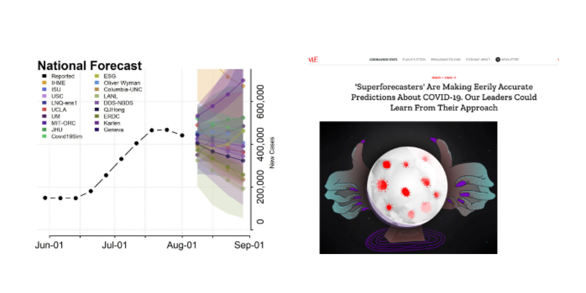
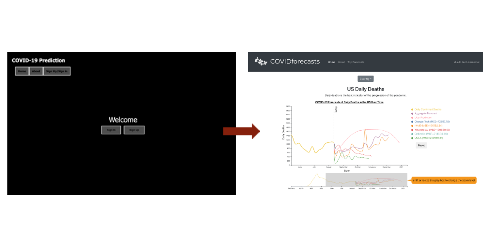
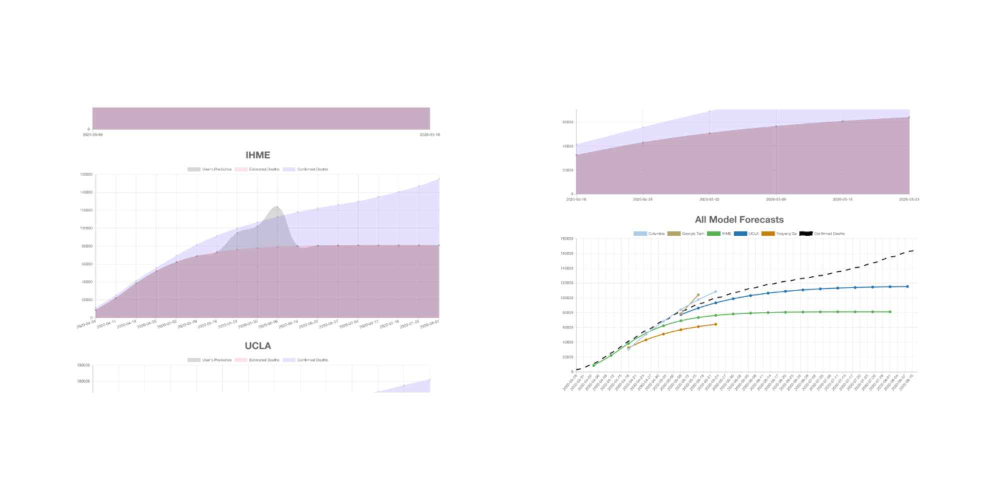

COVIDforecasts aims to showcase known and predicted pandemic data, and also allows users to guess the future trajectory of COVID-19.
Jacob Abernethy, Project Lead
Bo Waggoner, Mentor
Raf Frongillo, Mentor
Sarah Yoo, Student
Annirudha Murali, Student
June 2020 to Present
The COVIDforecasts website aims to show various past data readings of coronavirus data, as well as future predictions from various sources. Different forecasts relating to the COVID-19 pandemic are displayed, and users can make their own predictions about the future trajectory of factors relating to the pandemic such as daily deaths, hospitalizations and cases. Our mission is to deliver future projections and collected data by providing the best information on the COVID-19 pandemic.
I worked on COVIDforecasts this summer as a research intern for Georgia Tech’s COV-IDEAS REU program. Through the summer, the project team I was a part of focused on aggregating data to show past readings of coronavirus data, as well as future predictions from various sources. The goal was to create a public prediction market for COVID-19, that anyone could use.
The motivation for this project stemmed from the lack of understandable data that was being released on the future projections of the pandemic. Different data sources show very varying projections and can be hard to read for anyone not familiar with the pandemic already. Also, most data sources came from accredited academic institutions who were making future projections with the data they had collected themselves, so each source gave a different point of view. We wanted to take this data and transform it into a public prediction market. Since the pandemic has escalated, ‘super forecasters’ have made unique and accurate predictions relating to the pandemic, and we wanted to take the knowledge and showcase it for all to see.
One large focus that was a part of the project ideation was the gamification of the site. Prediction markets can be fun because they let real people give their opinions and views on future events, but we wanted to make sure the site was engaging in the correct way, and that people would make meaningful earnest predictions on our site.
We wanted the main features of the site to include collecting user predictions, ranking forecasts based on accuracy, and evaluating forecast models and user predictions.
We had various sprints where we developed our site in different stages. In the first sprint, we set up a basic Flask site and create our first visualizations in Chart.js. We first had all the charts separate and allowed for users to vote on a poll which prediction seemed the best. During this stage, we also programmed backend APIs for reading and sending forecast data.
The second sprint consisted of us refactoring the site with React, and organizing a separate frontend and backend for the structure. We used React on the frontend and kept Flask on the backend. This helped with improvements to the site’s UI and better organizing the files. This also helped us learn about running web apps locally and guiding others how to install and configure our app.
Halfway through the 10-week program, we were given a seminar talk by Robin Hanson, an acclaimed professor and economist, where he talked about forecasting, crowdsourcing, and policy in a pandemic, and how they all connect to each other. Since our project aligned with many of his points and economic interests, we wanted to prepare a Minimum Viable Product to present to him and receive feedback. For this sprint, we added D3.js visualizations with the option for users to draw their predictions, which were then saved in a database. We also added account authentication, a user profile page, and smoothed out the design and interface of the charts and site.
At the end of the 10 week program we wanted to do a soft release of the product that we could send out to people and have them make their predictions. For this final product we added an evaluation metric (Mean Squared Error), and a Top Forecasters page which ranks results of user and official forecaster predictions. The site was deployed on Heroku and is public and available for anyone to use. Click here to see the live site.
This was my first time researching in an REU program, and doing so remotely was a unique experience. I am glad I took part in the project and was able to produce not only a fully-fleshed project, but also something that can be used by others. Here is an article written by Georgia Tech's College of Computing about the project.
Besides working on this site, I also developed the landing site for the REU using React as a side project! You can check it out here.